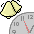

ROOL Programs
Improved versions of Alarm and a utility to make submitting code to ROOL easier.
ROOL

Alarm276.ZIP
14 Feb 2008 56 Kbytes
Alarm277.ZIP
04 Aug 2008 56 Kbytes
 AlarmChanges276.ZIP
AlarmChanges276.ZIP
14 Feb 2008 87 Kbytes
AlarmChanges277.ZIP
04 Aug 2008 82 Kbytes
AlarmSrc276.ZIP
14 Feb 2008 208 Kbytes
AlarmSrc277.ZIP
04 Aug 2008 210 Kbytes
EzROOL001.ZIP
Decodes and correctly filetypes ROOL archives
Version : 0.01
26 Oct 2008 387 Kbytes
Licence_v1.pdf
18 May 2007 35 Kbytes
ROOLsrc003.ZIP
Generate source archive for return to ROOL
Version : 0.03
26 Jun 2008 302 Kbytes
 Test
Test
15 Mar 2008